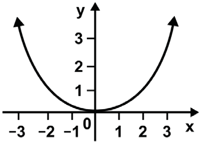
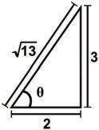
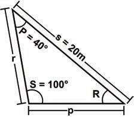
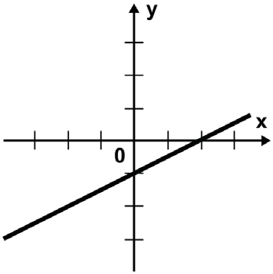
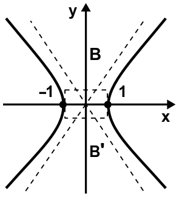

Simulación de Examen — Ingreso a la Licenciatura UNAM Área 4
La respuesta correcta aparece en verde
Pregunta 1 (ID 1)
Identifica la función de la lengua que ejemplifica el siguiente texto.
Adiós al poeta del compromiso
Muere Mario Benedetti después de una larga vida de lucha contra la adversidad y en defensa de la alegría.
A. Fática.
B. Apelativa.
C. Referencial. ✓
D. Poética.
Pregunta 2 (ID 2)
Elige la función de la lengua que predomina en el siguiente ejemplo.
Luisa, ¿puedes limpiar la mesa y lavar los trastes por favor?
A. Metalingüística.
B. Apelativa. ✓
C. Referencial.
D. Sintomática.
Pregunta 3 (ID 3)
Identifica la forma del discurso que predomina en el siguiente párrafo.
Los primeros prototipos de los platos biodegradables eran de piedra caliza, fécula de papa y papel reciclado, pero se fue perfeccionando la idea hasta que se logró una mezcla de almidón de papa, agua y un polímero orgánico.
A. Argumentativa.
B. Narrativa.
C. Demostrativa.
D. Descriptiva. ✓
Pregunta 4 (ID 4)
Identifica la forma del discurso que predomina en el siguiente texto.
Hablamos porque tenemos necesidad de nombrarnos, de afirmar nuestra libertad y declarar al mundo nuestro absoluto derecho a existir. Entendemos entonces que somos seres que existimos por el lenguaje en tanto seres comunitarios. Individuos que nacemos y nos relacionamos a partir de una vida en comunidad. Comunidad y comunicación no sólo son términos similares, sino también esencias que caracterizan a los seres humanos que existen en el lenguaje. Por ello el lenguaje posee una condición ontológica en el devenir del hombre histórico.
A. Argumentación. ✓
B. Descripción.
C. Narración.
D. Exposición.
Pregunta 5 (ID 5)
Lee el siguiente texto y contesta de la pregunta 5 a la 9.
El misterio de las joyas de concha
Al igual que la turquesa, las plumas de aves exóticas y el oro, la concha (lo que conocemos como concha de mar) era un material precioso en el México prehispánico (anterior a la conquista y colonización españolas). Así lo prueban los cientos de piezas elaboradas con diversos tipos de conchas recuperadas en las distintas excavaciones a lo largo de todo el país: solo en las excavaciones que se realizan desde 1978 en la zona arqueológica del Templo Mayor de Tenochtitlan se han recuperado más de 2,300 objetos hechos con concha. Las piezas, que han ido apareciendo en diferentes excavaciones, eran depositadas en las tumbas como ofrendas funerarias para recrear el inframundo acuático.
Para los mexicas, así como las diversas culturas de Mesoamérica, la concha tenía una connotación sagrada, pues al ser un elemento acuático se asociaba con ese líquido esencial en el desarrollo de la vida. Además, por lo difícil que resultaba su obtención, era considerada un material de lujo, al que, por ejemplo, en Tenochtitlan, solo tenía acceso la clase gobernante.
El arqueólogo Adrián Velázquez Castro busca desde hace quince años las huellas de las herramientas empleadas por los artesanos prehispánicos en la elaboración de los objetos de concha. Y es que, a pesar de la gran cantidad de piezas recuperadas, no se han encontrado hasta ahora en la zona del Templo Mayor de Tenochtitlan restos de ningún taller o del área de producción de estos adornos. Velázquez empezó a trabajar en la clasificación de la colección de objetos de concha del Templo Mayor, pero su interés por conocer las formas de elaboración de estas piezas lo llevó a crear un proyecto de arqueología experimental que se convertiría, con el tiempo, en un taller de fabricación de la concha. Con este taller se pretende conocer, mediante la reconstrucción de las piezas antiguas con conchas modernas, las técnicas con las que se trabajó este material en la época prehispánica. Gracias al taller se ha podido saber, por ejemplo, que la producción del Templo Mayor fue muy estandarizada (se utilizaron la misma técnica y los mismos materiales), fue controlada por la clase gobernante y estuvo enfocada, casi exclusivamente, a la creación de objetos ornamentales.
Al principio el taller se limitó a estudiar la colección de objetos de concha del Templo Mayor, pero poco a poco se extendió, y ya lleva realizados más de setecientos experimentos con otros objetos de concha del México prehispánico. «En gran parte gracias al trabajo de estudiantes de arqueología, tenemos ya un buen número de colecciones estudiadas, que van desde el norte de México hasta la zona maya, desde las etapas más tempranas, durante el periodo formativo, hasta el posclásico tardío, con la conquista española», comenta Adrián Velázquez Castro.
El Universal
La idea principal del texto es que
A. la concha fue un material precioso y lujoso para las culturas prehispánicas. ✓
B. el taller ha trabajado con distintas muestras de conchas prehispánicas.
C. la arqueología estudia las manifestaciones culturales antiguas.
D. el trabajo de los estudiantes ha contribuido a obtener información veraz.
Pregunta 6 (ID 6)
Lee el siguiente texto y contesta de la pregunta 5 a la 9.
El misterio de las joyas de concha
Al igual que la turquesa, las plumas de aves exóticas y el oro, la concha (lo que conocemos como concha de mar) era un material precioso en el México prehispánico (anterior a la conquista y colonización españolas). Así lo prueban los cientos de piezas elaboradas con diversos tipos de conchas recuperadas en las distintas excavaciones a lo largo de todo el país: solo en las excavaciones que se realizan desde 1978 en la zona arqueológica del Templo Mayor de Tenochtitlan se han recuperado más de 2,300 objetos hechos con concha. Las piezas, que han ido apareciendo en diferentes excavaciones, eran depositadas en las tumbas como ofrendas funerarias para recrear el inframundo acuático.
Para los mexicas, así como las diversas culturas de Mesoamérica, la concha tenía una connotación sagrada, pues al ser un elemento acuático se asociaba con ese líquido esencial en el desarrollo de la vida. Además, por lo difícil que resultaba su obtención, era considerada un material de lujo, al que, por ejemplo, en Tenochtitlan, solo tenía acceso la clase gobernante.
El arqueólogo Adrián Velázquez Castro busca desde hace quince años las huellas de las herramientas empleadas por los artesanos prehispánicos en la elaboración de los objetos de concha. Y es que, a pesar de la gran cantidad de piezas recuperadas, no se han encontrado hasta ahora en la zona del Templo Mayor de Tenochtitlan restos de ningún taller o del área de producción de estos adornos. Velázquez empezó a trabajar en la clasificación de la colección de objetos de concha del Templo Mayor, pero su interés por conocer las formas de elaboración de estas piezas lo llevó a crear un proyecto de arqueología experimental que se convertiría, con el tiempo, en un taller de fabricación de la concha. Con este taller se pretende conocer, mediante la reconstrucción de las piezas antiguas con conchas modernas, las técnicas con las que se trabajó este material en la época prehispánica. Gracias al taller se ha podido saber, por ejemplo, que la producción del Templo Mayor fue muy estandarizada (se utilizaron la misma técnica y los mismos materiales), fue controlada por la clase gobernante y estuvo enfocada, casi exclusivamente, a la creación de objetos ornamentales.
Al principio el taller se limitó a estudiar la colección de objetos de concha del Templo Mayor, pero poco a poco se extendió, y ya lleva realizados más de setecientos experimentos con otros objetos de concha del México prehispánico. «En gran parte gracias al trabajo de estudiantes de arqueología, tenemos ya un buen número de colecciones estudiadas, que van desde el norte de México hasta la zona maya, desde las etapas más tempranas, durante el periodo formativo, hasta el posclásico tardío, con la conquista española», comenta Adrián Velázquez Castro.
El Universal
La frase inframundo acuático se refiere a que ________ en el mundo de los muertos.
A. el elemento fuego no es predominante
B. el ser es sagrado
C. existe el agua como expresión de vida ✓
D. hay ríos y lagos
Pregunta 7 (ID 7)
Lee el siguiente texto y contesta de la pregunta 5 a la 9.
El misterio de las joyas de concha
Al igual que la turquesa, las plumas de aves exóticas y el oro, la concha (lo que conocemos como concha de mar) era un material precioso en el México prehispánico (anterior a la conquista y colonización españolas). Así lo prueban los cientos de piezas elaboradas con diversos tipos de conchas recuperadas en las distintas excavaciones a lo largo de todo el país: solo en las excavaciones que se realizan desde 1978 en la zona arqueológica del Templo Mayor de Tenochtitlan se han recuperado más de 2,300 objetos hechos con concha. Las piezas, que han ido apareciendo en diferentes excavaciones, eran depositadas en las tumbas como ofrendas funerarias para recrear el inframundo acuático.
Para los mexicas, así como las diversas culturas de Mesoamérica, la concha tenía una connotación sagrada, pues al ser un elemento acuático se asociaba con ese líquido esencial en el desarrollo de la vida. Además, por lo difícil que resultaba su obtención, era considerada un material de lujo, al que, por ejemplo, en Tenochtitlan, solo tenía acceso la clase gobernante.
El arqueólogo Adrián Velázquez Castro busca desde hace quince años las huellas de las herramientas empleadas por los artesanos prehispánicos en la elaboración de los objetos de concha. Y es que, a pesar de la gran cantidad de piezas recuperadas, no se han encontrado hasta ahora en la zona del Templo Mayor de Tenochtitlan restos de ningún taller o del área de producción de estos adornos. Velázquez empezó a trabajar en la clasificación de la colección de objetos de concha del Templo Mayor, pero su interés por conocer las formas de elaboración de estas piezas lo llevó a crear un proyecto de arqueología experimental que se convertiría, con el tiempo, en un taller de fabricación de la concha. Con este taller se pretende conocer, mediante la reconstrucción de las piezas antiguas con conchas modernas, las técnicas con las que se trabajó este material en la época prehispánica. Gracias al taller se ha podido saber, por ejemplo, que la producción del Templo Mayor fue muy estandarizada (se utilizaron la misma técnica y los mismos materiales), fue controlada por la clase gobernante y estuvo enfocada, casi exclusivamente, a la creación de objetos ornamentales.
Al principio el taller se limitó a estudiar la colección de objetos de concha del Templo Mayor, pero poco a poco se extendió, y ya lleva realizados más de setecientos experimentos con otros objetos de concha del México prehispánico. «En gran parte gracias al trabajo de estudiantes de arqueología, tenemos ya un buen número de colecciones estudiadas, que van desde el norte de México hasta la zona maya, desde las etapas más tempranas, durante el periodo formativo, hasta el posclásico tardío, con la conquista española», comenta Adrián Velázquez Castro.
El Universal
A partir del texto se infiere que la concha de mar tiene las siguientes características.
A. Moldeables y duraderas. ✓
B. Maleables y efímeras.
C. Lujosas y endebles.
D. Exóticas e inefables.
Pregunta 8 (ID 8)
Lee el siguiente texto y contesta de la pregunta 5 a la 9.
El misterio de las joyas de concha
Al igual que la turquesa, las plumas de aves exóticas y el oro, la concha (lo que conocemos como concha de mar) era un material precioso en el México prehispánico (anterior a la conquista y colonización españolas). Así lo prueban los cientos de piezas elaboradas con diversos tipos de conchas recuperadas en las distintas excavaciones a lo largo de todo el país: solo en las excavaciones que se realizan desde 1978 en la zona arqueológica del Templo Mayor de Tenochtitlan se han recuperado más de 2,300 objetos hechos con concha. Las piezas, que han ido apareciendo en diferentes excavaciones, eran depositadas en las tumbas como ofrendas funerarias para recrear el inframundo acuático.
Para los mexicas, así como las diversas culturas de Mesoamérica, la concha tenía una connotación sagrada, pues al ser un elemento acuático se asociaba con ese líquido esencial en el desarrollo de la vida. Además, por lo difícil que resultaba su obtención, era considerada un material de lujo, al que, por ejemplo, en Tenochtitlan, solo tenía acceso la clase gobernante.
El arqueólogo Adrián Velázquez Castro busca desde hace quince años las huellas de las herramientas empleadas por los artesanos prehispánicos en la elaboración de los objetos de concha. Y es que, a pesar de la gran cantidad de piezas recuperadas, no se han encontrado hasta ahora en la zona del Templo Mayor de Tenochtitlan restos de ningún taller o del área de producción de estos adornos. Velázquez empezó a trabajar en la clasificación de la colección de objetos de concha del Templo Mayor, pero su interés por conocer las formas de elaboración de estas piezas lo llevó a crear un proyecto de arqueología experimental que se convertiría, con el tiempo, en un taller de fabricación de la concha. Con este taller se pretende conocer, mediante la reconstrucción de las piezas antiguas con conchas modernas, las técnicas con las que se trabajó este material en la época prehispánica. Gracias al taller se ha podido saber, por ejemplo, que la producción del Templo Mayor fue muy estandarizada (se utilizaron la misma técnica y los mismos materiales), fue controlada por la clase gobernante y estuvo enfocada, casi exclusivamente, a la creación de objetos ornamentales.
Al principio el taller se limitó a estudiar la colección de objetos de concha del Templo Mayor, pero poco a poco se extendió, y ya lleva realizados más de setecientos experimentos con otros objetos de concha del México prehispánico. «En gran parte gracias al trabajo de estudiantes de arqueología, tenemos ya un buen número de colecciones estudiadas, que van desde el norte de México hasta la zona maya, desde las etapas más tempranas, durante el periodo formativo, hasta el posclásico tardío, con la conquista española», comenta Adrián Velázquez Castro.
El Universal
¿Cuál es el interés del arqueólogo Adrián Velázquez Castro al crear el taller de fabricación de la concha?
A. Dar a conocer los oficios prehispánicos.
B. Continuar con la tradición mexica.
C. Perfeccionar el trabajo manual indígena.
D. Rescatar la manufactura precolombina. ✓
Pregunta 9 (ID 9)
Lee el siguiente texto y contesta de la pregunta 5 a la 9.
El misterio de las joyas de concha
Al igual que la turquesa, las plumas de aves exóticas y el oro, la concha (lo que conocemos como concha de mar) era un material precioso en el México prehispánico (anterior a la conquista y colonización españolas). Así lo prueban los cientos de piezas elaboradas con diversos tipos de conchas recuperadas en las distintas excavaciones a lo largo de todo el país: solo en las excavaciones que se realizan desde 1978 en la zona arqueológica del Templo Mayor de Tenochtitlan se han recuperado más de 2,300 objetos hechos con concha. Las piezas, que han ido apareciendo en diferentes excavaciones, eran depositadas en las tumbas como ofrendas funerarias para recrear el inframundo acuático.
Para los mexicas, así como las diversas culturas de Mesoamérica, la concha tenía una connotación sagrada, pues al ser un elemento acuático se asociaba con ese líquido esencial en el desarrollo de la vida. Además, por lo difícil que resultaba su obtención, era considerada un material de lujo, al que, por ejemplo, en Tenochtitlan, solo tenía acceso la clase gobernante.
El arqueólogo Adrián Velázquez Castro busca desde hace quince años las huellas de las herramientas empleadas por los artesanos prehispánicos en la elaboración de los objetos de concha. Y es que, a pesar de la gran cantidad de piezas recuperadas, no se han encontrado hasta ahora en la zona del Templo Mayor de Tenochtitlan restos de ningún taller o del área de producción de estos adornos. Velázquez empezó a trabajar en la clasificación de la colección de objetos de concha del Templo Mayor, pero su interés por conocer las formas de elaboración de estas piezas lo llevó a crear un proyecto de arqueología experimental que se convertiría, con el tiempo, en un taller de fabricación de la concha. Con este taller se pretende conocer, mediante la reconstrucción de las piezas antiguas con conchas modernas, las técnicas con las que se trabajó este material en la época prehispánica. Gracias al taller se ha podido saber, por ejemplo, que la producción del Templo Mayor fue muy estandarizada (se utilizaron la misma técnica y los mismos materiales), fue controlada por la clase gobernante y estuvo enfocada, casi exclusivamente, a la creación de objetos ornamentales.
Al principio el taller se limitó a estudiar la colección de objetos de concha del Templo Mayor, pero poco a poco se extendió, y ya lleva realizados más de setecientos experimentos con otros objetos de concha del México prehispánico. «En gran parte gracias al trabajo de estudiantes de arqueología, tenemos ya un buen número de colecciones estudiadas, que van desde el norte de México hasta la zona maya, desde las etapas más tempranas, durante el periodo formativo, hasta el posclásico tardío, con la conquista española», comenta Adrián Velázquez Castro.
El Universal
¿Cuál es la intención del autor al escribir este texto?
A. Comparar los materiales usados por las culturas prehispánicas.
B. Crear un taller para la fabricación de la concha de mar.
C. Divulgar los avances arqueológicos sobre las culturas prehispánicas. ✓
D. Revelar el misterio de las joyas de la concha de mar.
Pregunta 10 (ID 10)
Selecciona la opción que contenga la oración principal del siguiente párrafo.
El mercado de Tlatelolco asombró a Cortés por su perfección y magnitud. Aunque antes los mercados se establecían cada cinco días, éste funcionaba diario. Ahí llegaban productos de todos los sitios para vender y había todo lo que el hombre podría apetecer. Ahí todo se encontraba perfectamente ordenado por calles, según la naturaleza de las cosas exhibidas para la venta. Allí se reunía la gente, allí se comía y se bebía.
A. El mercado de Tlatelolco asombró a Cortés por su perfección y magnitud. ✓
B. Antes los mercados se establecían cada cinco días, pero éste funcionaba diario.
C. Allí se reunía la gente, allí se comía y se bebía.
D. Ahí todo se encontraba perfectamente ordenado por calles.
Pregunta 11 (ID 11)
En el siguiente enunciado las palabras en mayúsculas constituyen el
Chuang Tzu presencia A LAS AFUERAS DEL PALACIO la lucha entre dos serpientes.
A. complemento indirecto.
B. complemento circunstancial. ✓
C. complemento directo.
D. predicado nominal.
Pregunta 12 (ID 12)
Selecciona el grupo de conectores que permite la coherencia del siguiente fragmento.
El Banco de México ya es autónomo ________ debe seguir siéndolo. El Congreso debe preocuparse por establecer la relación jurídica y política con esa institución, ________ su operación no esté disociada de los mecanismos de representación ________ son inherentes a la función pública.
A. por lo que — así — por ende
B. por ello — dado que — los cuales
C. así que — para que — pues
D. y — de modo que — que ✓
Pregunta 13 (ID 13)
Selecciona el párrafo que presenta una redacción adecuada.
A. Amnistía Internacional hizo llegar hoy al nuevo gobernador del estado de Oaxaca una carta abierta en la cual presenta un resumen de los principales desafíos por afrontar en cuanto al cuidado de los derechos humanos, asimismo lo llama a desarrollar un plan de acción en la materia. ✓
B. Amnistía Internacional hizo llegar una carta abierta hoy al nuevo gobernador del Estado de Oaxaca, en la cual le presenta un resumen de los principales desafíos de derechos humanos y le llama a desarrollar un plan de acción en la materia.
C. Amnistía Internacional hizo llegar una carta abierta al nuevo gobernador del Estado de Oaxaca hoy, para lo cual presenta un resumen de los principales desafíos para los derechos humanos, igualmente llama a desarrollar un plan de acción en la materia antes citada.
D. Amnistía Internacional hizo llegar al nuevo gobernador del estado de Oaxaca hoy una misiva abierta, en dicha carta dirigida al primer mandatario estatal presenta un resumen de los principales desafíos de derechos humanos llamándolo a desarrollar un plan de acción en la materia.
Pregunta 14 (ID 14)
¿Cuál de los siguientes párrafos está escrito correctamente?
A. Los personajes de la jarcha son principalmente la muchacha y el habib o amigo, como se denomina al amante. También aparece la madre y las hermanas como un rol de confidente mudo. Los temas son la ausencia del amado, la partida o llegada del amante al alba casi única referencia al exterior y la mención de alguna fiesta como la Pascua. ✓
B. Los personajes de la jarcha son: principalmente la muchacha y el habib o amigo como se denomina al amante. También aparece la madre y las hermanas como un rol de confidente mudo; los temas son la ausencia del amado, la partida o llegada del amante al alba casi única referencia al exterior y la mención de alguna fiesta como la Pascua.
C. Los personajes de la jarcha son, principalmente la muchacha y el habib o amigo —cómo se denomina al amante—; también aparece la madre y las hermanas como un rol de confidente mudo; los temas son: la ausencia del amado, la partida o llegada del amante al alba, casi única referencia al exterior, y la mención de alguna fiesta como la Pascua.
D. Los personajes de la jarcha son, principalmente, la muchacha y el habib o amigo (como se denomina al amante) y la madre y las hermanas como un rol de confidente mudo. Los temas son: la ausencia del amado, la partida o llegada del amante al alba casi única referencia al exterior y la mención de alguna fiesta como la Pascua.
Pregunta 15 (ID 15)
Selecciona el sinónimo de la palabra en mayúsculas.
Marta veía los VESTIGIOS de un papel consumido por las llamas.
A. Pedazos.
B. Restos. ✓
C. Signos.
D. Resultados.
Pregunta 16 (ID 16)
Selecciona la opción que contiene únicamente palabras homófonas.
A. Numero — Número — Numeró
B. Ixtacíhuatl — Iztacíhuatl — Iztaccíhuatl
C. Solo — Sólo — Esté — Éste
D. Echo — Hecho — Uno — Huno ✓
Pregunta 17 (ID 17)
Completa el enunciado con las grafías correctas.
Aquellas cri___is y horribles erup___iones del man___o carácter de la sobrina eran tan fuertes como raras.
A. s — s — z
B. c — c — z
C. c — c — s
D. s — c — s ✓
Pregunta 18 (ID 18)
Completa el siguiente enunciado con la opción que contenga las grafías correctas.
Martín una vez pintó un ___eranio. El ___endarme que lo vio dibujó una ___irafa.
A. g — g — g
B. g — g — j ✓
C. j — g — j
D. g — j — g
Pregunta 19 (ID 19)
¿Cuál de las siguientes magnitudes es vectorial?
A. Temperatura
B. Masa
C. Velocidad ✓
D. Energía
Pregunta 20 (ID 20)
Se lanza una pelota verticalmente hacia arriba con una velocidad inicial de 20 m/s. Usando $$g = 10\text{ m/s}^2$$, ¿qué altura máxima alcanza?
A. $$10$$ m
B. $$40$$ m
C. $$20$$ m ✓
D. $$5$$ m
Pregunta 21 (ID 21)
Según la Tercera Ley de Newton, cuando un patinador empuja una pared:
A. La pared ejerce una fuerza mayor sobre el patinador
B. La pared ejerce una fuerza igual y opuesta sobre el patinador ✓
C. Solo el patinador ejerce fuerza
D. No hay reacción si la pared no se mueve
Pregunta 22 (ID 22)
Un bloque de 10 kg se encuentra sobre una superficie horizontal con coeficiente de fricción cinética $$\mu_k = 0.3$$. Usando $$g = 10\text{ m/s}^2$$, la fuerza de fricción es:
A. $$3$$ N
B. $$30$$ N ✓
C. $$100$$ N
D. $$0.3$$ N
Pregunta 23 (ID 23)
¿Cuál es la energía potencial gravitatoria de un objeto de 5 kg ubicado a 12 m de altura? ($$g = 10\text{ m/s}^2$$)
A. $$120$$ J
B. $$60$$ J
C. $$600$$ J ✓
D. $$6000$$ J
Pregunta 24 (ID 24)
Una grúa levanta una carga realizando un trabajo de 3 000 J en 15 s. La potencia desarrollada es:
A. $$45\,000$$ W
B. $$20$$ W
C. $$200$$ W ✓
D. $$2\,000$$ W
Pregunta 25 (ID 25)
La temperatura de ebullición del agua (100 °C) expresada en kelvin es:
A. $$173$$ K
B. $$273$$ K
C. $$373$$ K ✓
D. $$473$$ K
Pregunta 26 (ID 26)
Cuando una ambulancia se acerca a un observador, la frecuencia del sonido percibida:
A. Disminuye
B. No cambia
C. Se anula
D. Aumenta ✓
Pregunta 27 (ID 27)
El campo eléctrico creado por una carga puntual positiva apunta:
A. Hacia la carga
B. En dirección tangencial a la carga
C. Radialmente hacia afuera de la carga ✓
D. Perpendicularmente a la superficie donde está la carga
Pregunta 28 (ID 28)
Cuando un conductor recto que lleva corriente se coloca perpendicularmente a un campo magnético uniforme, experimenta una fuerza que es:
A. Paralela al conductor
B. Paralela al campo magnético
C. Perpendicular tanto al conductor como al campo ✓
D. Nula, pues no hay interacción
Pregunta 29 (ID 29)
El resultado de $$\frac{3}{4} - \frac{2}{3} + \frac{1}{6}$$ es:
A. $$\frac{1}{4}$$ ✓
B. $$\frac{1}{12}$$
C. $$\frac{5}{12}$$
D. $$\frac{1}{3}$$
Pregunta 30 (ID 30)
Si $$z_1 = 3 + 2i$$ y $$z_2 = -1 + 4i$$, entonces $$z_1 + z_2$$ es:
A. $$4 + 6i$$
B. $$2 + 6i$$ ✓
C. $$2 - 2i$$
D. $$4 - 2i$$
Pregunta 31 (ID 31)
El resultado de $$\frac{x^5 \cdot x^3}{x^4}$$ es:
A. $$x^{12}$$
B. $$x^2$$
C. $$x^4$$ ✓
D. $$x^{15}$$
Pregunta 32 (ID 32)
El resultado de $$(3x + 5)(3x - 5)$$ es:
A. $$9x^2 + 25$$
B. $$9x^2 - 25$$ ✓
C. $$9x^2 - 30x + 25$$
D. $$6x^2 - 25$$
Pregunta 33 (ID 33)
La factorización de $$6x^3 - 9x^2 + 3x$$ es:
A. $$3x(2x^2 - 3x + 1)$$ ✓
B. $$3(2x^3 - 3x^2 + x)$$
C. $$x(6x^2 - 9x + 3)$$
D. $$6x(x^2 - \frac{3}{2}x + \frac{1}{2})$$
Pregunta 34 (ID 34)
El resultado de $$\frac{x}{x+1} + \frac{1}{x+1}$$ es:
A. $$\frac{x+1}{2(x+1)}$$
B. $$1$$ ✓
C. $$\frac{x+1}{x+2}$$
D. $$\frac{2x+1}{x+1}$$
Pregunta 35 (ID 35)
La solución de $$5(x + 2) - 3 = 2(x - 1) + 6$$ es:
A. $$x = -1$$ ✓
B. $$x = 1$$
C. $$x = -3$$
D. $$x = 3$$
Pregunta 36 (ID 36)
Las soluciones de la ecuación $$2x^2 - 8x + 6 = 0$$ son:
A. $$x = 2$$ y $$x = 6$$
B. $$x = 1$$ y $$x = 3$$ ✓
C. $$x = -1$$ y $$x = -3$$
D. $$x = 4$$ y $$x = 2$$
Pregunta 37 (ID 37)
El conjunto solución de $$3x + 5 > 2x - 1$$ es:
A. $$x > -6$$ ✓
B. $$x < -6$$
C. $$x > 6$$
D. $$x < 6$$
Pregunta 38 (ID 38)
La solución de $$x^2 - 4 < 0$$ es:
A. $$x < -2$$ o $$x > 2$$
B. $$-2 < x < 2$$ ✓
C. $$x > 2$$
D. $$x < -2$$
Pregunta 39 (ID 39)
La solución del sistema $$\begin{cases}x + 2y = 8\\3x - y = 3\end{cases}$$ es:
A. $$x = 4,\; y = 2$$
B. $$x = 1,\; y = 3$$
C. $$x = 2,\; y = 3$$ ✓
D. $$x = 3,\; y = 2$$
Pregunta 40 (ID 40)
El rango de la función cuya gráfica se muestra a continuación, son los valores

A. mayores que 0 y menores que 1.
B. mayores que 2.
C. mayores o iguales que 0. ✓
D. menores o iguales que 0.
Pregunta 41 (ID 41)
Si $$f(x) = 2x + 6$$, entonces $$f^{-1}(x)$$ es:
A. $$\frac{x - 6}{2}$$ ✓
B. $$\frac{x + 6}{2}$$
C. $$2x - 6$$
D. $$\frac{1}{2x + 6}$$
Pregunta 42 (ID 42)
El ángulo de $$60°$$ expresado en radianes es:
A. $$\frac{\pi}{6}$$
B. $$\frac{\pi}{4}$$
C. $$\frac{\pi}{3}$$ ✓
D. $$\frac{\pi}{2}$$
Pregunta 43 (ID 43)
A partir de la siguiente imagen, determina la razón trigonométrica que corresponde a la secante del ángulo θ.

A. $$\frac{2}{\sqrt{13}}$$
B. $$\frac{\sqrt{13}}{2}$$ ✓
C. $$\frac{3}{\sqrt{13}}$$
D. $$\frac{\sqrt{13}}{3}$$
Pregunta 44 (ID 44)
Determina el valor del lado p del siguiente triángulo.
Considera
Sen(40°) = 0.64
Sen(100°) = 0.98
Cos(40°) = 0.76
Cos(100°) = 0.17

A. 16.10 m
B. 13.05 m ✓
C. 18.34 m
D. 30.64 m
Pregunta 45 (ID 45)
Si $$3^x = 81$$, entonces $$x$$ es:
A. $$3$$
B. $$4$$ ✓
C. $$27$$
D. $$5$$
Pregunta 46 (ID 46)
El valor de $$\log_{10} 1000 + \log_{10} 10$$ es:
A. $$3$$
B. $$4$$ ✓
C. $$30$$
D. $$13$$
Pregunta 47 (ID 47)
El punto medio del segmento con extremos $$A(2, 8)$$ y $$B(6, 4)$$ es:
A. $$(3, 5)$$
B. $$(4, 6)$$ ✓
C. $$(8, 12)$$
D. $$(2, 2)$$
Pregunta 48 (ID 48)
Elige la ecuación que describe la siguiente gráfica.

A. $$y = x - \frac{1}{2}$$
B. $$y = \frac{3}{2}x - \frac{1}{2}$$
C. $$y = -\frac{3}{2}x + \frac{1}{2}$$
D. $$y = \frac{x}{2} - 1$$ ✓
Pregunta 49 (ID 49)
¿Cuál es la ecuación que corresponde a la siguiente gráfica?

A. $$x^2 + y^2 = -1$$
B. $$x^2 + y^2 = 1$$
C. $$x^2 - y^2 = 1$$ ✓
D. $$x^2 - y^2 = -1$$
Pregunta 50 (ID 50)
El valor de $$\lim_{x \to 3} (2x^2 - 5x + 1)$$ es:
A. $$2$$
B. $$4$$ ✓
C. $$10$$
D. $$-2$$
Pregunta 51 (ID 51)
Un texto expositivo tiene como finalidad principal:
A. Expresar emociones y sentimientos del autor
B. Convencer al lector de una postura determinada
C. Informar y explicar un tema de manera clara y objetiva ✓
D. Narrar hechos ficticios con personajes y trama
Pregunta 52 (ID 52)
Los elementos fundamentales de la estructura interna de un texto dramático son:
A. Narrador, ambiente y trama
B. Tesis, argumentos y conclusión
C. Acto, escena y acotación ✓
D. Estrofa, verso y rima
Pregunta 53 (ID 53)
La comedia como subgénero dramático se caracteriza por:
A. Presentar un final trágico e inevitable
B. Tratar temas exclusivamente históricos
C. Provocar la risa y presentar un desenlace feliz ✓
D. Emplear solo personajes de clase alta
Pregunta 54 (ID 54)
Un verso de once sílabas métricas se denomina:
A. Octosílabo
B. Alejandrino
C. Endecasílabo ✓
D. Decasílabo
Pregunta 55 (ID 55)
La expresión 'Te lo he dicho un millón de veces' es un ejemplo de:
A. Metáfora
B. Hipérbole ✓
C. Símil
D. Personificación
Pregunta 56 (ID 56)
El género literario que expresa sentimientos y emociones del autor a través del verso se denomina:
A. Épico
B. Dramático
C. Narrativo
D. Lírico ✓
Pregunta 57 (ID 57)
El Romanticismo literario del siglo XIX se distingue por:
A. La exaltación de la razón y el orden clásico
B. La representación objetiva de la realidad social
C. La expresión de los sentimientos, la libertad y la naturaleza ✓
D. El uso de técnicas experimentales y el absurdo
Pregunta 58 (ID 58)
Sor Juana Inés de la Cruz es una representante del:
A. Romanticismo mexicano
B. Barroco novohispano ✓
C. Modernismo latinoamericano
D. Naturalismo mexicano
Pregunta 59 (ID 59)
En el verso 'La luna sonreía desde el cielo oscuro', la figura retórica empleada es:
A. Hipérbaton
B. Antítesis
C. Personificación ✓
D. Sinécdoque
Pregunta 60 (ID 60)
El narrador en primera persona se caracteriza por:
A. Conocer los pensamientos de todos los personajes
B. Contar la historia desde su propia experiencia como personaje ✓
C. Mantenerse completamente ajeno a los hechos narrados
D. Dirigirse directamente al lector sin participar en la trama
Pregunta 61 (ID 61)
La forma real de la Tierra se describe más precisamente como un:
A. Esferoide perfecto
B. Geoide, ligeramente achatado en los polos ✓
C. Cilindro irregular
D. Ovoide simétrico
Pregunta 62 (ID 62)
Los husos horarios dividen la Tierra en:
A. 12 franjas de 30° cada una
B. 24 franjas de 15° cada una ✓
C. 36 franjas de 10° cada una
D. 48 franjas de 7.5° cada una
Pregunta 63 (ID 63)
El Eje Neovolcánico Transversal de México es importante porque:
A. Concentra los principales volcanes activos del país ✓
B. Es la frontera natural entre México y Guatemala
C. Separa las aguas del Pacífico y del Atlántico
D. Es la zona más seca del territorio mexicano
Pregunta 64 (ID 64)
Los ríos Lerma-Santiago y Balsas pertenecen a la vertiente del:
A. Golfo de México
B. Mar Caribe
C. Océano Pacífico ✓
D. Interior (cuencas cerradas)
Pregunta 65 (ID 65)
El clima predominante en la Península de Yucatán es:
A. Templado húmedo
B. Seco desértico
C. Tropical con lluvias en verano ✓
D. Frío de alta montaña
Pregunta 66 (ID 66)
La capa de ozono protege a la Tierra de:
A. Las tormentas solares magnéticas
B. Los rayos ultravioleta provenientes del Sol ✓
C. El aumento de la temperatura superficial
D. La radiación infrarroja reflejada por la Tierra
Pregunta 67 (ID 67)
La transición demográfica describe el paso de una sociedad con:
A. Alta natalidad y baja mortalidad a baja natalidad y alta mortalidad
B. Altas tasas de natalidad y mortalidad a bajas tasas de ambas ✓
C. Baja natalidad y baja mortalidad a altas tasas de ambas
D. Alta mortalidad y baja migración a alta migración y baja mortalidad
Pregunta 68 (ID 68)
La agricultura, la ganadería y la pesca son actividades económicas del sector:
A. Secundario
B. Terciario
C. Primario ✓
D. Cuaternario
Pregunta 69 (ID 69)
La Organización de las Naciones Unidas (ONU) fue creada en 1945 con el propósito principal de:
A. Regular el comercio internacional entre naciones
B. Mantener la paz y la seguridad internacionales ✓
C. Financiar proyectos de desarrollo en países pobres
D. Establecer una moneda única mundial
Pregunta 70 (ID 70)
La región económica del noroeste de México se caracteriza por:
A. La producción petrolera y petroquímica
B. La industria automotriz y manufacturera de exportación
C. La agricultura de riego y la industria maquiladora ✓
D. El turismo cultural y la producción artesanal
Pregunta 71 (ID 71)
¿Cuál de las siguientes NO es una característica de los seres vivos?
A. Reproducción
B. Metabolismo
C. Cristalización ✓
D. Irritabilidad
Pregunta 72 (ID 72)
Los cuatro bioelementos primarios que constituyen aproximadamente el 96% de la materia viva son:
A. Carbono, hidrógeno, oxígeno y nitrógeno ✓
B. Carbono, calcio, fósforo y potasio
C. Hidrógeno, oxígeno, hierro y sodio
D. Nitrógeno, azufre, magnesio y cloro
Pregunta 73 (ID 73)
La función principal de los carbohidratos en los organismos es:
A. Transmitir información genética
B. Catalizar reacciones químicas
C. Proporcionar energía de uso inmediato ✓
D. Formar la membrana celular
Pregunta 74 (ID 74)
Las enzimas son proteínas que actúan como:
A. Hormonas reguladoras del crecimiento
B. Catalizadores biológicos que aceleran reacciones ✓
C. Transportadores de oxígeno en la sangre
D. Receptores de señales nerviosas
Pregunta 75 (ID 75)
El producto final de la cadena de transporte de electrones en la respiración aerobia es:
A. Ácido pirúvico
B. Glucosa
C. Agua ✓
D. Acetil-CoA
Pregunta 76 (ID 76)
En la metafase de la mitosis, los cromosomas se caracterizan por:
A. Descondensarse y formar la cromatina
B. Alinearse en el plano ecuatorial de la célula ✓
C. Migrar hacia los polos opuestos
D. Duplicar su ADN en preparación para la división
Pregunta 77 (ID 77)
En la dominancia incompleta, el fenotipo del heterocigoto es:
A. Idéntico al del homocigoto dominante
B. Idéntico al del homocigoto recesivo
C. Un fenotipo intermedio entre ambos homocigotos ✓
D. Aleatorio entre dominante y recesivo
Pregunta 78 (ID 78)
La hipótesis de Oparin-Haldane propone que la vida se originó a partir de:
A. Organismos extraterrestres que llegaron en meteoritos
B. La creación instantánea de células completas
C. Reacciones químicas en una atmósfera primitiva reductora ✓
D. La generación espontánea de microorganismos
Pregunta 79 (ID 79)
Los órganos homólogos son evidencia de evolución porque indican:
A. Que los organismos tienen la misma dieta
B. Un ancestro común entre especies diferentes ✓
C. Adaptación a un mismo ambiente
D. Que todos los organismos son idénticos genéticamente
Pregunta 80 (ID 80)
El ciclo del carbono incluye procesos como la fotosíntesis y la respiración porque:
A. Ambos liberan oxígeno a la atmósfera
B. La fotosíntesis fija $$CO_2$$ y la respiración lo libera, reciclando el carbono ✓
C. Ambos procesos ocurren exclusivamente en plantas
D. El carbono solo se encuentra en forma de diamante y grafito
Pregunta 81 (ID 81)
El cambio de estado de sólido a gas sin pasar por el estado líquido se denomina:
A. Evaporación
B. Fusión
C. Sublimación ✓
D. Condensación
Pregunta 82 (ID 82)
En el modelo atómico actual, los electrones se encuentran en:
A. Órbitas circulares definidas alrededor del núcleo
B. Regiones de probabilidad llamadas orbitales ✓
C. El interior del núcleo junto con los protones
D. Capas fijas a distancias exactas del núcleo
Pregunta 83 (ID 83)
En un enlace covalente coordinado, los electrones compartidos son aportados por:
A. Ambos átomos en partes iguales
B. Un solo átomo de los dos que se enlazan ✓
C. El solvente en el que se encuentran
D. Electrones libres del medio
Pregunta 84 (ID 84)
El compuesto $$NaOH$$ se clasifica como:
A. Ácido
B. Sal
C. Óxido básico
D. Hidróxido (base) ✓
Pregunta 85 (ID 85)
La tensión superficial del agua permite que algunos insectos caminen sobre ella y se debe a:
A. La baja densidad del agua líquida
B. La cohesión entre las moléculas de agua en la superficie ✓
C. La presión atmosférica ejercida sobre el líquido
D. El bajo peso molecular del agua
Pregunta 86 (ID 86)
Para balancear la ecuación $$\text{N}_2 + \text{H}_2 \to \text{NH}_3$$, los coeficientes correctos son:
A. $$1, 1, 1$$
B. $$1, 3, 2$$ ✓
C. $$2, 3, 2$$
D. $$1, 2, 2$$
Pregunta 87 (ID 87)
Según la teoría de Brønsted-Lowry, una base es una sustancia que:
A. Dona protones ($$H^+$$)
B. Acepta protones ($$H^+$$) ✓
C. Libera iones $$OH^-$$ en solución
D. Pierde electrones en la reacción
Pregunta 88 (ID 88)
La reacción $$2\text{H}_2\text{O} \to 2\text{H}_2 + \text{O}_2$$ es un ejemplo de reacción de:
A. Síntesis
B. Sustitución simple
C. Descomposición ✓
D. Doble sustitución
Pregunta 89 (ID 89)
Un catalizador aumenta la velocidad de una reacción química porque:
A. Aumenta la temperatura del sistema
B. Disminuye la energía de activación de la reacción ✓
C. Aumenta la concentración de los reactivos
D. Cambia los productos de la reacción
Pregunta 90 (ID 90)
El carbono puede formar cuatro enlaces covalentes debido a que tiene:
A. Cuatro neutrones en su núcleo
B. Cuatro electrones de valencia ✓
C. Cuatro niveles de energía
D. Cuatro isótopos estables
Pregunta 91 (ID 91)
El Renacimiento fue un movimiento cultural que surgió en:
A. Francia en el siglo XVII
B. Italia en los siglos XV y XVI ✓
C. Inglaterra en el siglo XVIII
D. Alemania en el siglo XIV
Pregunta 92 (ID 92)
La Reforma Protestante iniciada por Martín Lutero en 1517 cuestionó principalmente:
A. El sistema feudal europeo
B. La autoridad y las prácticas de la Iglesia católica ✓
C. Los descubrimientos geográficos de España y Portugal
D. El poder militar del Sacro Imperio Romano Germánico
Pregunta 93 (ID 93)
La Declaración de Independencia de Estados Unidos (1776) fue redactada principalmente por:
A. George Washington
B. Benjamin Franklin
C. Thomas Jefferson ✓
D. John Adams
Pregunta 94 (ID 94)
El Congreso de Viena (1814-1815) tuvo como objetivo principal:
A. Extender las reformas liberales por toda Europa
B. Restaurar el orden monárquico europeo tras la derrota de Napoleón ✓
C. Crear una organización de naciones unidas
D. Repartir las colonias americanas entre las potencias
Pregunta 95 (ID 95)
La unificación de Alemania fue liderada principalmente por:
A. Napoleón III
B. Giuseppe Garibaldi
C. Otto von Bismarck ✓
D. Klemens von Metternich
Pregunta 96 (ID 96)
La Revolución de Octubre de 1917 en Rusia estableció:
A. Una monarquía constitucional
B. Una república parlamentaria
C. El primer Estado socialista del mundo ✓
D. Un gobierno de coalición liberal
Pregunta 97 (ID 97)
Adolf Hitler llegó al poder en Alemania en 1933 aprovechando, entre otros factores:
A. La prosperidad económica de la República de Weimar
B. La crisis económica, el resentimiento por el Tratado de Versalles y el desempleo ✓
C. Una invasión militar extranjera
D. El apoyo del Partido Comunista alemán
Pregunta 98 (ID 98)
Las bombas atómicas lanzadas sobre Hiroshima y Nagasaki en agosto de 1945 fueron decisivas para:
A. El inicio de la guerra en el Pacífico
B. La rendición incondicional de Japón ✓
C. La entrada de Estados Unidos a la guerra
D. La caída de la Alemania nazi
Pregunta 99 (ID 99)
La independencia de la India en 1947 fue impulsada por el movimiento de resistencia no violenta liderado por:
A. Jawaharlal Nehru
B. Mahatma Gandhi ✓
C. Subhas Chandra Bose
D. Muhammad Ali Jinnah
Pregunta 100 (ID 100)
La caída del Muro de Berlín (1989) y la disolución de la URSS (1991) dieron paso a:
A. El fortalecimiento del bloque comunista
B. Un nuevo orden mundial unipolar y la globalización acelerada ✓
C. El aislamiento de Europa del resto del mundo
D. La formación de nuevos imperios coloniales
Pregunta 101 (ID 101)
La civilización maya se distinguió en Mesoamérica por sus avances en:
A. La metalurgia y la fabricación de armas de bronce
B. La astronomía, las matemáticas y la escritura jeroglífica ✓
C. La construcción de acueductos y sistemas de drenaje urbano
D. La domesticación de animales de carga
Pregunta 102 (ID 102)
El sistema de castas en la Nueva España se basaba en:
A. La riqueza y las propiedades de cada individuo
B. El nivel de educación y la profesión
C. La mezcla racial y el origen étnico ✓
D. La región geográfica de nacimiento
Pregunta 103 (ID 103)
José María Morelos, en su documento 'Sentimientos de la Nación' (1813), propuso:
A. El establecimiento de una monarquía constitucional mexicana
B. La soberanía popular y la abolición de la esclavitud ✓
C. La alianza con España para combatir a Francia
D. La creación de un imperio con capital en Chilpancingo
Pregunta 104 (ID 104)
Como resultado de la guerra México-Estados Unidos (1846-1848), México:
A. Obtuvo la independencia de Texas
B. Perdió más de la mitad de su territorio mediante el Tratado de Guadalupe Hidalgo ✓
C. Recibió compensación económica y conservó California
D. Firmó una alianza militar permanente con Estados Unidos
Pregunta 105 (ID 105)
La República Restaurada (1867-1876) inició tras la victoria de los liberales sobre:
A. El gobierno conservador de Santa Anna
B. El Segundo Imperio Mexicano de Maximiliano ✓
C. La intervención estadounidense
D. La dictadura de Porfirio Díaz
Pregunta 106 (ID 106)
Durante el Porfiriato, la inversión extranjera se concentró principalmente en:
A. La educación pública y la salud
B. La agricultura ejidal y comunal
C. Los ferrocarriles, la minería y el petróleo ✓
D. La industria textil artesanal y la manufactura local
Pregunta 107 (ID 107)
El Plan de Ayala, proclamado por Emiliano Zapata en 1911, exigía principalmente:
A. La industrialización del campo mexicano
B. La restitución de tierras a los pueblos despojados ✓
C. La separación de la Iglesia y el Estado
D. La creación de un ejército profesional
Pregunta 108 (ID 108)
El artículo 27 de la Constitución de 1917 establece que:
A. La educación debe ser laica y gratuita
B. Los trabajadores tienen derecho a huelga
C. La propiedad de tierras y aguas corresponde originariamente a la Nación ✓
D. La religión oficial del Estado es la católica
Pregunta 109 (ID 109)
El periodo conocido como 'Maximato' (1928-1934) se caracterizó por:
A. La influencia política de Plutarco Elías Calles sobre los presidentes en turno ✓
B. El gobierno autónomo y democrático de los estados
C. La apertura comercial y la industrialización acelerada
D. La reforma agraria más extensa de la historia mexicana
Pregunta 110 (ID 110)
El movimiento estudiantil de 1968 en México concluyó trágicamente con:
A. La renuncia del presidente Díaz Ordaz
B. La matanza de Tlatelolco el 2 de octubre ✓
C. La cancelación de los Juegos Olímpicos
D. Un golpe de Estado militar
Pregunta 111 (ID 111)
La palabra 'filosofía' proviene del griego y significa literalmente:
A. Conocimiento absoluto
B. Amor a la sabiduría ✓
C. Búsqueda de la verdad
D. Ciencia del pensamiento
Pregunta 112 (ID 112)
La rama de la filosofía que estudia el conocimiento, su naturaleza y sus límites se denomina:
A. Ética
B. Ontología
C. Epistemología ✓
D. Estética
Pregunta 113 (ID 113)
Tales de Mileto, considerado el primer filósofo occidental, propuso que el principio originario de todas las cosas era:
A. El fuego
B. El aire
C. El agua ✓
D. La tierra
Pregunta 114 (ID 114)
El método socrático consiste fundamentalmente en:
A. Enseñar verdades absolutas mediante conferencias
B. Llegar al conocimiento a través del diálogo y la formulación de preguntas ✓
C. La observación empírica de la naturaleza
D. La contemplación mística de las ideas divinas
Pregunta 115 (ID 115)
Según la teoría de las Ideas de Platón, el mundo sensible es:
A. La única realidad verdadera y completa
B. Una copia imperfecta del mundo de las Ideas ✓
C. El resultado de la combinación de átomos
D. Una ilusión creada por los sentidos sin fundamento alguno
Pregunta 116 (ID 116)
Aristóteles es considerado el padre de la lógica formal por haber desarrollado:
A. El método experimental
B. La dialéctica platónica
C. El silogismo como forma de razonamiento deductivo ✓
D. La geometría euclidiana
Pregunta 117 (ID 117)
La ética se diferencia de la moral en que la ética:
A. Dicta las normas de comportamiento de una sociedad
B. Es la reflexión filosófica sobre la moral y sus fundamentos ✓
C. Se basa exclusivamente en las costumbres y tradiciones
D. Solo se aplica en contextos religiosos
Pregunta 118 (ID 118)
El imperativo categórico de Kant establece que se debe:
A. Actuar buscando siempre el mayor placer personal
B. Obedecer las leyes del Estado sin cuestionarlas
C. Actuar solo según aquella máxima que se pueda querer como ley universal ✓
D. Seguir las costumbres de la mayoría social
Pregunta 119 (ID 119)
La estética como disciplina filosófica se ocupa del estudio de:
A. Las normas morales que rigen la conducta humana
B. La belleza, el arte y la experiencia sensible ✓
C. Las leyes que gobiernan el pensamiento lógico
D. La estructura política de las sociedades
Pregunta 120 (ID 120)
La frase 'La existencia precede a la esencia', fundamental en el existencialismo, fue formulada por:
A. Friedrich Nietzsche
B. Martin Heidegger
C. Jean-Paul Sartre ✓
D. Albert Camus